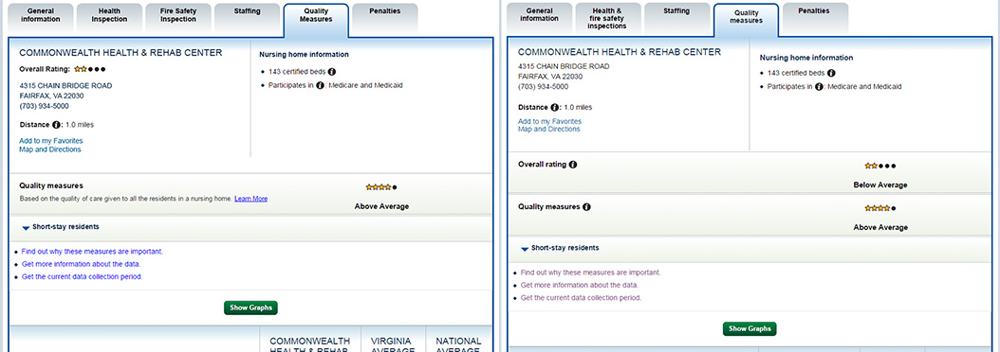

Nursing Home Compare: Usability Test
December, 2015
I’m currently working at the Bentley User Experience Center (UXC) as a graduate assistant where I develop and conduct usability tests.
The first project that I worked on during the fall 2015 semester was the “Nursing Home Compare” tool on Medicare.gov. My team included my project manager, another graduate assistant and I. We had been working with them yearly since 2011, and this year they wanted to learn more about star ratings, quality measures, and previous test's findings.
Challenges
Experience: This was the first full usability test I would be working on. I would implement knowledge from my Testing & Assessment Programs class, my teammates’ expertise, and books I had read (“A Practical Guide to Usability Testing,” “Handbook of Usability Testing,” “Moderating Usability Tests,” and “Don’t Make Me Think”) to keep up with the team.
Subject Matter: Searching for nursing homes can be a very difficult time for many people. Since we were dealing with such an emotional topic, we needed to be careful in phrasing questions in our moderator’s guide as well as being very aware of the participant’s comfort during the test.
Process
Before preparing for the usability test, my project manager told me to look through the years’ usability test results to get an idea of the history of the project. I aggregated the findings from past tests and recommendations to give the team a better grasp of what issues persisted over multiple years and what issues had been resolved.
Upon speaking with the client (we had weekly meetings throughout the testing process), we learned that their goals were focused around new “Quality Measures” and their star ratings. Based on the client’s goals and past testing, we established a concise list of research questions that would drive the usability study.
Creating the Test
First our team analyzed past expert reviews and usability tests to see what information we already had.
For some findings from previous years that were not yet implemented, we wanted to test a possible solution so we could make a concrete recommendation. To do this, we decided to use a prototype to do A/B testing. I created the prototype using Axure that would mimic the behavior and look of the live website with a few changes that we wanted to test.
Left: Prototype, Right: Live site
The client also wanted to implement Plain Language principles throughout the website, and had some content that would need to be tested. First the team altered the text to follow the Plain Language guidelines. After doing research on Plain Language testing methodologies, we decided to have the tester read through a section of text within a prototype to themselves, and comment on anything they found confusing, misleading, or unclear.
The final moderator’s guide contained 10 tasks for the 1.5 hour test. We arranged times and dates for testing and sent a screener to the recruiting agency to bring in participants that had searched for a nursing home (for themselves or a loved one) within the past 6 months.
Testing
Earlier in the year I was trained to set up and break down the UXC’s state of the art usability lab which we would use for this study.
IMAGE OF USABILITY LAB
I was able to moderate two of the tests. These usability tests were unique in that the subject of study was very emotional for most participants. Although we were testing interface elements and the content of the website, participants were immediately drawn towards content that was relevant to their personal experiences. Paying attention to the participants’ body language and comfort levels was essential while keeping them on the right path to answer the research questions.
During the sessions in which I was not moderating, I was taking rigorous notes regarding the session. I suggested that between sessions the team could
review findings from the previous participant. This way, we would already have findings and trends to look deeper into when we were ready to analyze our
data.

Analysis & Report
Once the test was completed, we realized that we had a large amount of data and were not sure how to go about tackling the report. Using the notes, post-its, and our research questions, we created a PowerPoint deck with a slide for each report item. We then went one-by-one finding and organizing the data surrounding each finding until we had a cohesive report.
REPORT SLIDE IMAGE
In order to help the implementation process, I wanted to create a document that would help for some of issues to be resolved quickly by the developers. We devised a worksheet of near-term recommendations that we predicted to be simple to implement (see below). This would allow a developer to quickly find what changes should be made without sifting through the 50-slide deck meant for a different set of stakeholders.
<IMAGE OF SHORT-TERM DEVELOPEMENT SLIDE>
What I Would Do Differently
Although having the post-it notes was a success, initially grouping them by research goals would have made for a smoother transition into analysis.
A/B testing with the sample size of 9 didn’t reveal statistically significant results that a typical A/B test should yield. Testing on the modified variation alone may have given similar results with less effort.
What Went Well
Incorporating Plain Language testing into our usability test was not only interesting (I hope to do expand upon this methodology in the future), but successful. We were able to target what parts of the language users did not understand and make suggestions that were accepted and implemented by the client.
The Post-it notes between sessions gave the team clear visuals of patterns and trends. We shared our success using this method with the rest of the UXC and I am currently looking into post-it software tools that could make it easier to share the findings.
Our team worked closely throughout the project, making for an efficient and rigorous final report that the client was happy to recieve.
I learned an incredible amount about usability testing through this experience, including how to design a test, create a moderator’s guide, moderate a usability test, analyze test data, and deliver a usability test report.